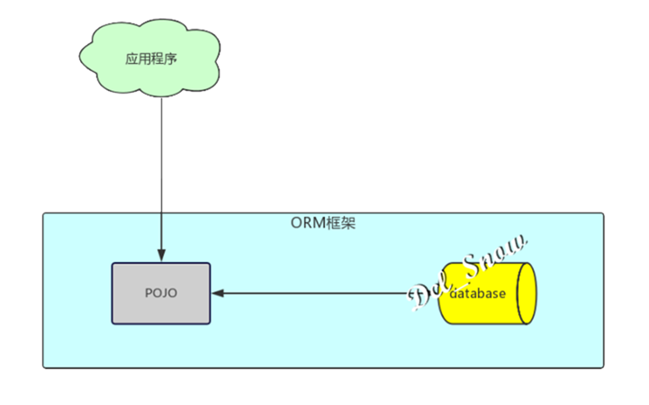
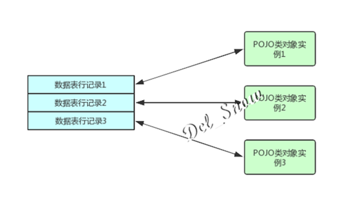

ORM框架
概述
在学习MyBatis之前，先来看看什么是ORM框架。
ORM全称Object/Relation Mapping，对象/关系数据库映射，功能为完成对象的编程语言到关系数据库的映射，可以将其当成应用程序和关系型数据库的桥梁。
当使用面向对象的编程语言来进行应用开发时，从项目一开始就采用的是面向对象的思想（分析、设计、编程等），但到了持久层数据库访问时，又必须重返关系数据库的访问方式，所以就产生了ORM框架，可以把关系数据库包装成面向对象的模型。
ORM是面向对象程序设计语言和关系数据库发展不同步时的中间解决方案。采用ORM框架后，应用程序不再直接访问底层数据库，而是以面向对象的方式来操作持久化对象（创建、修改、删除等），而ORM框架则将这些面向对象的操作转换成底层的SQL操作。

ORM框架的唯一作用就是：把对持久化对象的保存、修改、删除等操作，装换成对数据库的操作，编程人员可以以面向对象的方式操作持久化对象，而ORM框架则负责将相关操作转换成对应的SQL（结构化查询语言）操作。
ORM框架的映射方式
ORM框架提供了持久化类和数据表之间的映射关系，所有的ORM框架基本都遵循相同的映射思路：
1、数据表映射类：持久化类被映射到一个数据表。编程人员使用这个持久化类来创建实例、修改属性或删除实例时，系统自动会转换为对这个表进行CRUD操作。
2、数据表的行映射对象：持久化类会生成很多实例，每个实例对应数据表中的一行记录。当程序在应用中修改持久化类的某个实例时，ORM工具将会将其转换为对于对应数据表中特定的行的操作。

3、数据表的列映射对象的属性：当程序修改某个持久化对象的指定属性时，ORM会将其转换成对于对应数据表中指定数据行、指定列的操作。
基于这种基本的映射方式，ORM框架可以完成对象模型和关系模型之间的相互映射。
因此在ORM框架中，持久化对象是一种媒介，应用程序只需操作持久化对象，ORM框架则负责将这种操作转换为底层数据库操作。这种转换对开发者是透明的，开发者无须关心内部细节，从而将开发者从关系模型中解放出来，使得开发者能以面向对象的思维操作关系数据库。
流行的ORM框架
1、JPA：JPA本身是一种ORM规范，并不是ORM产品。相对于其他开源ORM框架，优势在于其是官方标准，因此具有通用性，若应用程序是面向JPA编程，那么应用程序就可以在各种ORM框架之间切换。
2、Hibernate：被选为JBoss的持久层解决方案，属于Red Hat组织。其灵巧的设计、优秀的性能和丰富的文档，使其成为最流行的开源ORM框架之一。
3、MyBatis：严格意义上并不能称之为ORM框架，它是半自动化的ORM实现，但它并不支持纯粹的面向对象操作，而是允许编程人员直接编写SQL语句，更加灵活。
{kind=link}
{kind=link}
{kind=link}